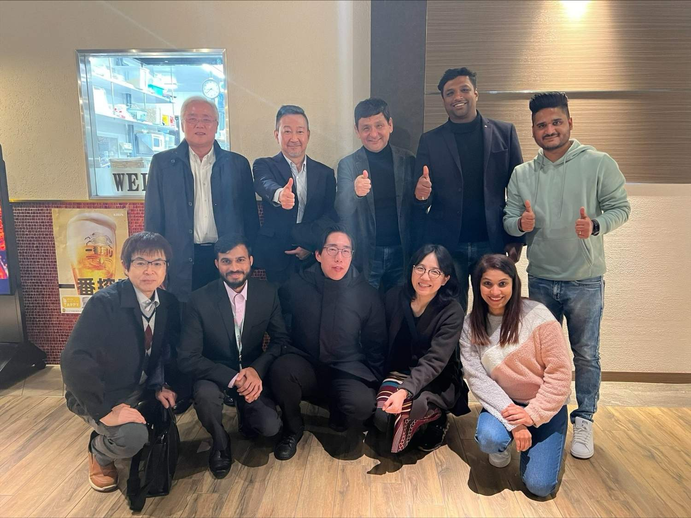
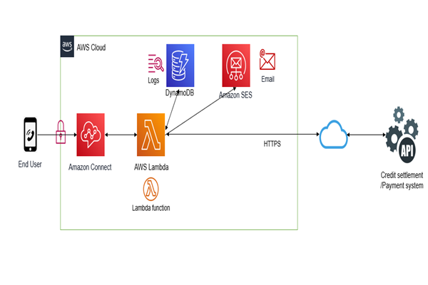
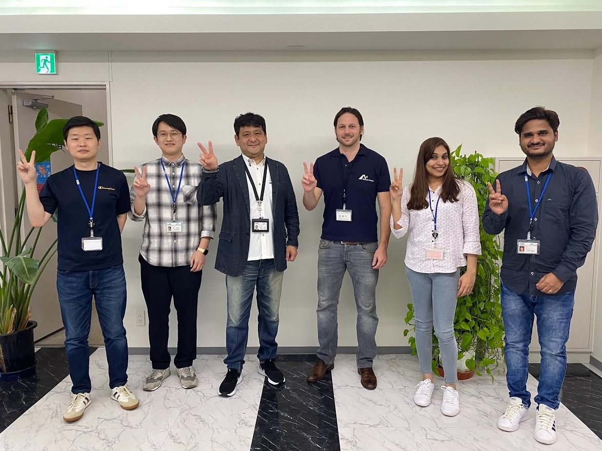
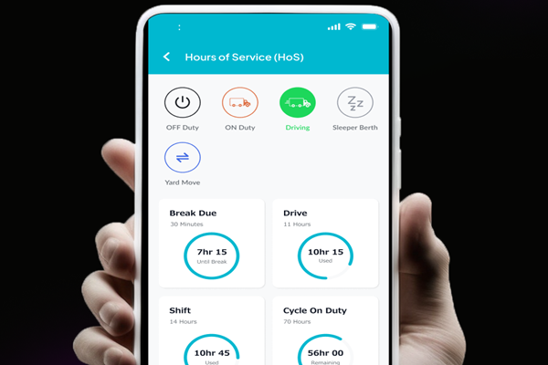
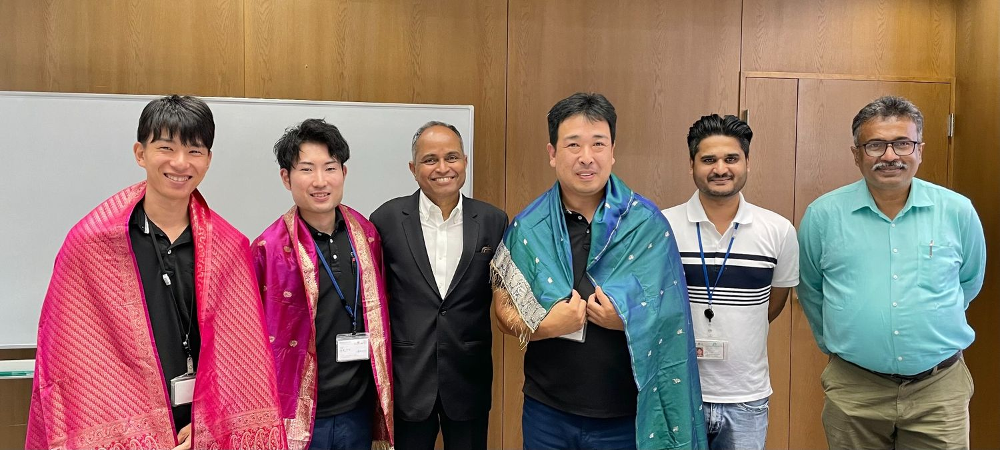

Year Six: New Challenges and Goals

As we step into this exciting new chapter, we're ready to tackle fresh challenges and ambitious goals. From mastering project management with cutting-edge technologies to collaborating with global teams, this year promises to be a whirlwind of innovation and discovery. Get ready for thrilling adventures in robotics, international teamwork, and all the learning that comes with it. Here's to embracing new opportunities and making this year one for the books! Let's dive in!
We need diversity of thought in the world to face the new challenges.
Chapter 1: Project Management—Mastering the AWS IVR Payment System
Year six kicked off with a new challenge that had me diving headfirst into project management. This time, I was tasked with overseeing the implementation of an AWS IVR Payment system. Think of it as creating a voice response system that could handle payments without the need for human interaction—essentially turning phones into virtual cashiers.
The project involved a lot of moving parts, and it felt like juggling flaming swords while riding a unicycle. But with the right tools and team support, we managed to streamline processes and make transactions smoother than a well-oiled machine. I became the unofficial “IVR Whisperer,” guiding the team through technical hurdles and keeping everyone on track, all while pretending I knew what I was doing.
Chapter 2: Working with Global Teams—A Cultural Melting Pot
As if managing the payment system wasn't enough, I found myself collaborating with teams from India, Japan, and the USA. It was like being in a tech summit without the need for fancy name tags.
The time zone differences were entertaining—one team member would pop in at 8 AM, while another was wrapping up their day at 8 PM. We'd gather for meetings, often resulting in delightful misunderstandings (like thinking someone was joking when they were completely serious). But those moments of cultural exchange were invaluable, helping us forge a strong global team spirit.
Chapter 3: Managing the ELD Project—Keeping It All Together
Next up was managing the ELD project with our Indian outsourcing team. This project aimed to create electronic logging devices for vehicles, ensuring compliance with regulations.
Managing remote teams was a bit like herding cats—if the cats were scattered across different states and had a knack for creative excuses. But with clear communication and the occasional virtual celebration (I'm talking snacks delivered to everyone's homes), we made significant progress. Every milestone felt like a little victory, and I learned to appreciate the quirks that come with remote collaboration.
Chapter 4: A Robotics Adventure—Visiting AGV and Drone Companies
As part of my ongoing mission to learn and grow, I had the opportunity to visit AGV robotics and drone companies with an Indian client.
Walking through the facilities, I was in awe of the innovations happening right before my eyes. I saw drones that could deliver packages and AGV robots zipping around like they owned the place. Watching the teams at work, I couldn't help but think about the future of transportation and logistics—exciting times ahead!
As I look to the future, I'm excited about the opportunities ahead—whether it's mastering new technologies, leading dynamic teams, or simply enjoying the journey. Who knows what challenges year seven will bring? Bring it on!